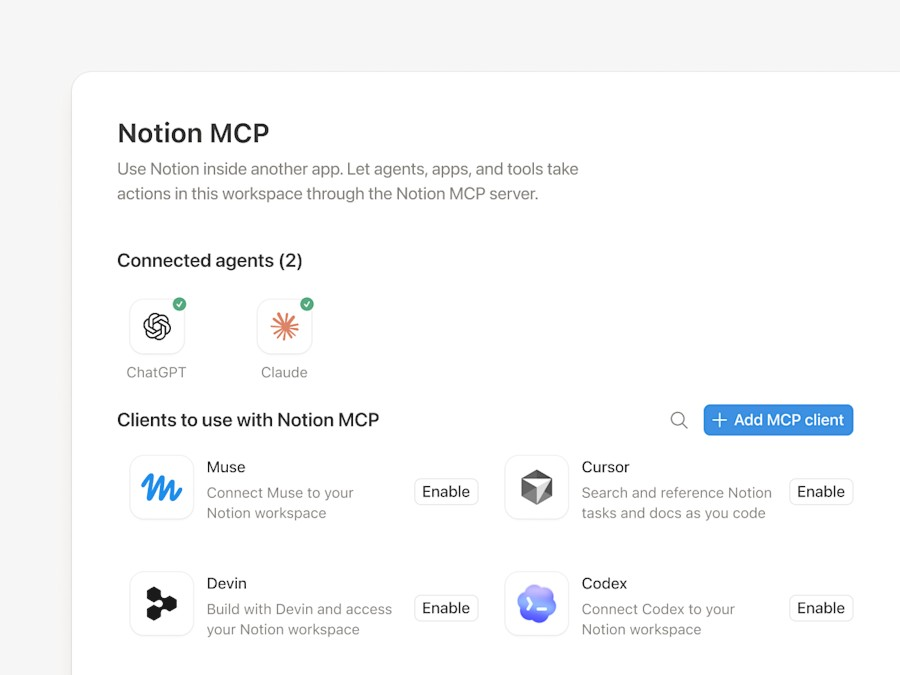

01 · 任务与证据
Notion的10月19日公告属于本期72小时补充，而不是今天刚发生的发布。它把新执行框架、持续执行、浏览器或计算机工作、上下文压缩和第二模型复核组合起来，并由Auto在允许的提供商之间选择或重新路由。厂商内部成本与速度测试说明其产品方向，不能当作编辑已经复现的收益。对用户而言，真正变化是过去显性的模型选择和一部分失败处理被移入服务内部，界面因此必须更清楚地解释当前进度、保留了什么约束、何时需要人接手。
Notion AI routing / credits · 产品 · 平台更新
同一项目的完整分析。研究截止为14:00:02Z；来源核验与图片获取在后，不改变事件日期。

Notion的10月19日公告属于本期72小时补充，而不是今天刚发生的发布。它把新执行框架、持续执行、浏览器或计算机工作、上下文压缩和第二模型复核组合起来，并由Auto在允许的提供商之间选择或重新路由。厂商内部成本与速度测试说明其产品方向，不能当作编辑已经复现的收益。对用户而言，真正变化是过去显性的模型选择和一部分失败处理被移入服务内部，界面因此必须更清楚地解释当前进度、保留了什么约束、何时需要人接手。
旧工作链是用户选模型、整理资料与上下文、运行任务，失败后重新启动或手工补齐遗漏。新方案试图保持执行连续性，并在内部决定模型与复核路径。这可能减少操作负担，也让复现问题更复杂：同一任务换了路由，答案或消耗可能不同；压缩后的上下文是否保留关键业务条件，需要用真实任务检查。这里不把“持续执行”理解为已经验证的无限恢复，也不假定第二模型复核能消除错误。最有用的控制是让使用者看见失败发生在哪一步、已经完成什么、恢复后是否会重复动作。
接入能力和未来路线必须分开。连接ChatGPT订阅只适用于个人Notion Agent，不包括Custom Agents；企业自带密钥是私有alpha，不能写成全面可用。MCP记忆同步可用，但Skills与AI Command Center在公告中仍是未来安排。对采购者，这些边界会影响究竟能把哪条现有工作流迁过去。一个团队若依赖自定义智能体，就不能因为个人Agent支持某种订阅连接而推断相同权益；若要求自带密钥，也不能把测试阶段能力当作已确定的企业部署条件。
积分调整也有独立时间表。积分管理说明与公告需要一起读：新的Business和Enterprise工作区从10月19日适用，现有工作区从11月2日生效；每成员的1500 Standard Auto和500 Select额度存在计划例外，不能合并、互换或结转。额外或特定工作负载另有工作区积分。管理员需要主动开启付费使用，默认耗尽会暂停，而不是自然继续无限执行。会议笔记从12月1日开始收费，不能把这笔未来费用写成今天已经发生。
验证价值应选相同的一组重复任务，对比固定获准模型加人工审核队列，以及人工维护上下文的原流程。记录最终完成数、错误修正、重试次数、任务中断后的恢复表现和最终积分，再判断预算是否更可预测。应提前定义哪些答案差异会改变业务决策、哪些中断可以接受，而不是等看到速度优势后再放宽标准。如果低名义成本被更多重试或不透明答案变化抵消，就应否定节省的结论；如果完整任务稳定完成、恢复状态可解释且总消耗下降，自动路由才真正减少用户工作。